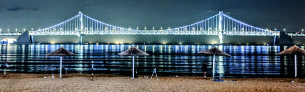

돼지국밥 is a hearty Korean soup made with pork and rice, famous in Busan. The rich broth is simmered for hours and usually served with salty shrimp, garlic, and chili paste for seasoning. It’s perfect on cold days and loved for its strong, comforting flavor.
산낙지 is a unique Korean delicacy where small octopus pieces are served while still moving! Usually seasoned with sesame oil and salt, it’s chewy and full of ocean flavor. Many say it’s both thrilling and delicious to try!
산낙지 is a unique Korean delicacy where small octopus pieces are served while still moving! Usually seasoned with sesame oil and salt, it’s chewy and full of ocean flavor. Many say it’s both thrilling and delicious to try!
The Lotte Giants are Busan’s beloved baseball team. Their fans are some of the most passionate in Korea, filling Sajik Stadium with orange balloons and chants. Watching a Giants game is a true local experience in Busan!
대선 is a popular brand of soju from Busan. Known for its clean and mild flavor, it’s often enjoyed with seafood dishes and grilled meat. For many locals, drinking 대선 by the seaside is a symbol of relaxation and friendship.
광안리 Beach is one of Busan’s most famous beaches, offering a beautiful view of the Gwangandaegyo Bridge. At night, the bridge lights up in stunning colors while people enjoy music, street food, and the ocean breeze along the promenade.